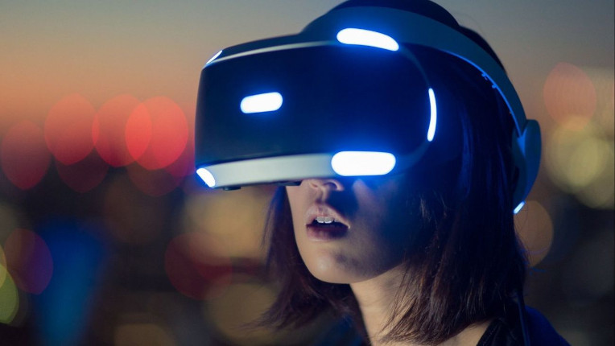

Data e Hora - Javascript
Realidade Virtual
O que é Realidade Virtual
Para que você entenda como funciona a Realidade Virtual, vamos te explicar seu conceito.
Chamamos de RV o ambiente no qual pode-se criar uma realidade alternativa, por meio de dispositivos tecnológicos, que simulam o mundo real.
Ainda que seja um universo semelhante ao verdadeira, trata-se de um espaço virtual, desenvolvido artificialmente. Dessa forma, o indivíduo consegue ter uma experiência bem realista — algumas simulações podem até incluir sensações táteis.
Essa área tem crescido consideravelmente nos últimos anos. Hoje, temos óculos especiais e fones de ouvido que possibilitam uma imersão mais profunda no ambiente virtual, seja para o entretenimento ou para trabalho.
Qual o objetivo da realidade virtual?
Ainda deseja saber para que serve a Realidade Virtual? Seu maior objetivo é projetar no meio digital elementos do mundo físico, em tempo real.
Para isso, utiliza-se técnicas e ferramentas tecnológicas para aumentar a sensação de realidade para o indivíduo. Em suma, a RV consiste em uma simulação do mundo real em uma plataforma informatizada.
Quais os benefícios da realidade virtual?
Depois de entender o que é Realidade Virtual, chegou o momento de conhecer seus benefícios. Do ponto de vista mercadológico, essa tecnologia possibilita enxergar as operações a partir de um novo viés. Confira suas principais vantagens a seguir.
A Realidade Virtual pode te ajudar a ganhar vantagem competitiva no mercado. Em uma empresa de arquitetura, por exemplo, essa tecnologia possibilita que as renderizações 3D dos projetos ganhem mais uma funcionalidade.
Com a RV, o cliente consegue caminhar pelo projeto e examinar cada detalhe. Ao vivenciar uma experiência diferenciada, as chances dele contratar os serviços dessa empresa aumentam.
Quais são os tipos de realidade virtual?
Os sistemas de Realidade Virtual mudam conforme o tipo de interação e imersão que oferecem ao usuário. Esses diferentes níveis variam conforme a potência e o desempenho da tecnologia que constrói a simulação. Um ambiente virtual com tele-presença, significa que o indivíduo se vê imerso em um mundo virtual, independentemente da sua localização real.
Já um ambiente RV de tele-operação utiliza recursos tecnológicos para conectar pessoas à distância, como aplicativos de vídeo. Veja outros exemplos de Realidade Virtual:
• VR de simulação: usa ferramentas que possibilitam ao usuários se sentir em um ambiente inteiramente virtual, mesmo estando no mundo físico;
• VR de projeção: o usuário se encontra no mundo físico, mas consegue se comunicar com objetos e personagens virtuais;
• VR aumentada: utiliza um dispositivo visual específico para oferecer uma imersão com o mundo virtual, como o Oculus Rift;
• VR de mesa: usa-se dispositivos com óculos e monitores para que o usuário consiga interagir com o mundo virtual.
Matérias - Ciências Humanas
Ciências Humanas e Sociais Aplicadas 1° Bimestre : estudamos sobre marco temporal, e estruras de lei e política social. Tivemos diversas aulas trabalhando sobre senso comum, o que era ética e moral.
Ciências Humanas e Sociais Aplicadas 2° Bimestre : trabalhamos e estudamos mais a fundo sobre atos institucionais, leis (políticas publicas) em relação a sociedade ainda fortemente se relacionando com a moral e ética.
Ciências Humanas e Sociais Aplicadas 3° Bimestre : ainda permanecemos no estudo do mundo político e sua estrutura, mas começamo a ver também sobre eventos históricos como guerras, revoluções, golpes e etc.